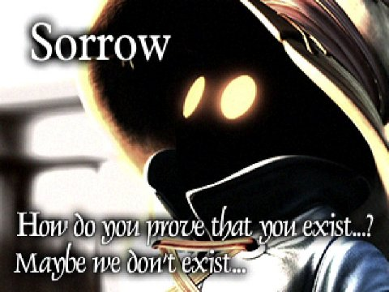
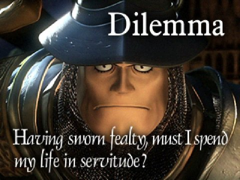
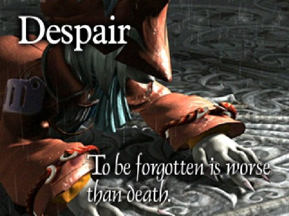
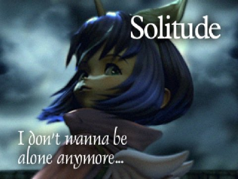
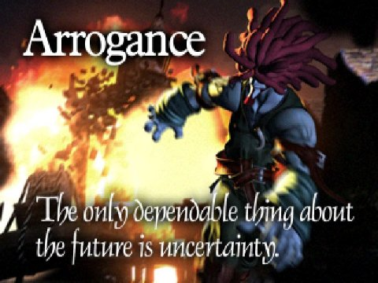
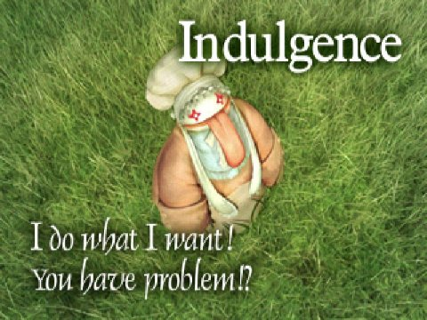

|
Character
Zidane Tribal
Sex : Male
Age : 16
Special Abilities : Steal & Skill
Trance : Dyne
Trance : เปลี่ยนคำสั่ง Skill เป็น Dyne
ซึ่งจะมีท่าไม้ตายที่รุนแรงให้เลือกหลายท่า
Job : Thief
Weapon : Dagger
Best Weapon : Ultima Weapon Attack 100
Best Attack : Thievery MP 8 (Deals
physical damage to the target)
พลังโจมตีของท่า Thievery จะขึ้นอยู่กับจำนวนครั้งที่ใช้ท่า "Steal"
โดยพลังโจมตีเริ่มต้นจะอยู่ที่ประมาณ 3,900 และจะเพิ่มขึ้นประมาณ 13-15 เมื่อใช้ท่า
"ขโมย"
เช่น "ขโมย" ไป 10 ครั้ง พลังโจมตีก็จะเพิ่มขึ้นประมาณ 130-150
รวมเป็น มีพลังโจมตีประมาณ 4,030 ถึง 4,050 damage
ดังนั้น หากใช้ท่า "ขโมย" ไปประมาณ 600 กว่าครั้ง ก็จะทำให้มีพลังโจมตีถึง
9,999 ได้
Virtue : ความถูกต้อง
Vivi Ornitier
Sex : Male
Age : 9
Special Abilities : Black Magic & Focus
Trance : Dbl Blk (Double Black Magic)
Trance : เปลี่ยนคำสั่ง Black Magic เป็น Dbl Blk
ซึ่งทำให้สามารถใช้เวทย์มนต์ดำได้ 2 ครั้งติดต่อกัน
Job : Mage
Weapon : Mage Staff
Best Weapon : Mace of Zeus Attack 35
Best Attack : Doomsday MP 72 (Causes
Shadow damage to all targets)
Sorrow : ความเศร้าโศก

Steiner (Adelbert Steiner)
Sex : Male
Age : 33
Special Abilities : Sword Art & Sword Magic (ใช้ได้เมื่ออยู่กับ Vivi)
Trance : (Attack power up)
Trance : เพิ่มพลังโจมตีให้สูงขึ้น
Job: Knight
Weapon : Sword
Best Weapon : Ragnarok Attack 87
Best Weapon2 : Excalibur 2 Attack 108
Best Attack : Shock MP 46 (Deals physical damage to the enemy)
Dilemma : สถานการณ์ที่ลำบาก

Garnet Til Alexandros 17th (Dagger)
Sex : Female
Age : 16
Special Abilities : Summon & White Magic
Trance : Eidolon (Summon attack twice)
Trance : เปลี่ยนคำสั่ง Summon เป็น Eidolon
ซึ่งทำให้เมื่อเรียก Eidolon ออกมาแล้ว Eidolon จะสุ่มโจมตีหลายครั้ง
Class : Summoner
Weapon : Racket
Best Weapon : Tiger Racket Attack 45
Best Attack : Ark MP 80 (Causes Shadow
damage to all enemies)
Devotion : การอุทิศตัว
Freya Crescent
Sex : Female
Age : 21
Special Abilities : Jump & Dragon
Trance : Power Jump (Jump and attack all enemy)
Trance : เปลี่ยนคำสั่ง Jump เป็น Power Jump
เมื่อกระโดดขึ้นไปแล้วจะลอยอยู่บนฟ้า และปาหอกลงมาโจมตีศัตรูหลายครั้ง
Class : Dragon Knight
Weapon : Spear
Best Weapon : Dragon's Hair Attack 77
Best Attack : Dragon's Chest
MP 16 (Deals physical damage to the enemy)
พลังโจมตีของท่า Dragon's Chest จะขึ้นอยู่กับจำนวน "มังกร" ที่สมาชิกในทีมฆ่าไป
เมื่อฆ่าศัตรูจำพวก "มังกร" ไป 1 ตัว ก็จะทำให้พลังโจมตีของท่านี้เพิ่มขึ้น
โดยพลังโจมตีจะเพิ่มขึ้นเป็นจำนวนเลขยกกำลัง 2
เช่น ฆ่า "มังกร" ไป 10 ตัว ก็จะเท่ากับ 10 ยกกำลัง 2 เท่ากับ
100 damage
หากฆ่า "มังกร" ไป 100 ตัว จะทำให้มีพลังโจมตี 100 ยกกำลัง 2 เท่ากับ
10,000 หรือ 9,999 damage
Despair : การสูญเสียความหวัง

Eiko Carol
Sex : Female
Age : 6
Special Abilities : White Magic & Summon
Trance : Dbl Wht (Double White Magic)
Trance : เปลี่ยนคำสั่ง White Magic เป็น Dbl Wht
ซึ่งทำให้สามารถใช้เวทย์มนต์ขาวได้ 2 ครั้งติดต่อกัน
Class : White Summoner
Weapon : Flute
Best Weapon : Tiger Racket Attack 45
Best Attack : Madeen MP 54 (Causes
Holy damage to all enemies)
Solitude : การอยู่โดดเดี่ยว

Amarant Coral
Sex : Male
Age : 26
Special Abilities : Flair & Throw
Trance : Flair (multiple targets)
Trance : สามารถใช้คำสั่ง Flair ให้กับทุกคนได้พร้อมกัน
Class : Ninja
Weapon : Claws
Best Weapon : Rune Claws Attack 83
Best Attack : Spare Change MP - (Causes Non-elemental damage to the enemy
by using Gil)
Arrogance : ความหยิ่งยโส

Quina Quen
Sex : Unknow
Age : Unknow
Special Abilities : Eat & Blue Magic
Trance : Cook (Cook enemy!!!)
Trance : เปลี่ยนคำสั่ง Eat เป็น Cook
สามารถ "กิน" ศัตรูได้ เมื่อ HP ของศัตรูเหลือน้อยกว่า 1/8
(หากใช้คำสั่ง Eat ต้องรอให้ HP ของศัตรูเหลือน้อยกว่า 1/4)
(เมื่อ "กิน" ศัตรู สามารถเรียนรู้ Blue
Magic ได้"
Class : Chef
Weapon : Fork
Best Weapon : Gastro Fork Attack 77
Best Attack : Frog Drop MP 10
(Amount of damage depends on the number of frogs you have caught)
พลังโจมตีของท่านี้ จะเท่ากับ Level ของ Quina X จำนวน "กบ" ที่จับได้
(ในมินิเกม Frogs Captured)
ดังนั้น หาก Quina มี Level 70 และจับ "กบ" ได้ 105 ตัว ก็จะได้
damage เท่ากบ 70 X 105 = 7,035
Indulgence : การทำตามความรู้สึก

|